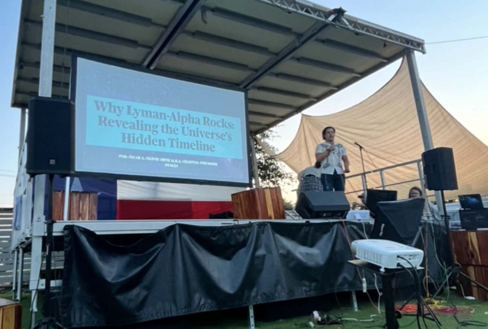

A core part of my work as an astronomer is sharing science beyond the classroom and
research group. I am deeply committed to outreach, mentorship, and creating pathways
into STEM for students from historically underrepresented backgrounds.
Astronomy Outreach
I regularly participate in astronomy outreach activities aimed at enhancing
undergraduates, and the general public's accessibility to astronomy and astronomy research. These events focus on making astrophysical
concepts intuitive, interactive, and exciting.
I gave public talks covering galaxies, and cosmic evolution, check out my AoT Talk here:
YouTube Link
Hands-on demonstrations explaining spectroscopy, redshift, and how we study distant galaxies
Departmental outreach events designed to connect students with active researchers

I gave a public talk for Astronomy on Tap (AoT) at Celis Brewery the summer of 2024.
I showed local Austinites why Lyman-alpha rocks and why they should care about this emission line.
Mentorship & Student Support
Mentorship has been a defining part of my academic journey, and I strive to provide
the same support to students navigating STEM pathways.
I actively mentor undergraduate and graduate students interested in astronomy and data science through various program such as GUMMY and GEVIP
I support first-generation and undocumented students pursuing higher education, check out my AstroBites article about it here: AstroBites Article
I help advise students on graduate school applications, research opportunities, and fellowships
I served as a graduate student representative to improve communication and student advocacy within the UT Astronomy Program
Co-Created a Python class at UT based off of the Python for Astronomers course at UC Berkeley called HackAstro-Academy. You can check out the GitHub here: HackAstro-Academy
I am also a Graduate student mentor in the GEVIP program, where I have the amazing opportunity of mentoring Astronomy undergraduates and getting them involved in cutting edge research. Check out the GEVIP website here: GEVIP
Community & Departmental Engagement
In addition to external outreach, I am actively involved in building community within
academic spaces.
I help organize departmental social and professional development events, through UGSPS and Cafecito Cosmico
Contributing to initiatives that foster collaboration and inclusivity
Helping design outreach programs that connect research with public audiences
Speaking & Collaboration
I am always happy to collaborate with schools, student organizations, and community
groups interested in astronomy, higher education pathways, or careers in STEM.
Interested in collaborating or inviting me to speak?
Please feel free to reach out via email or through LinkedIn at the links below.